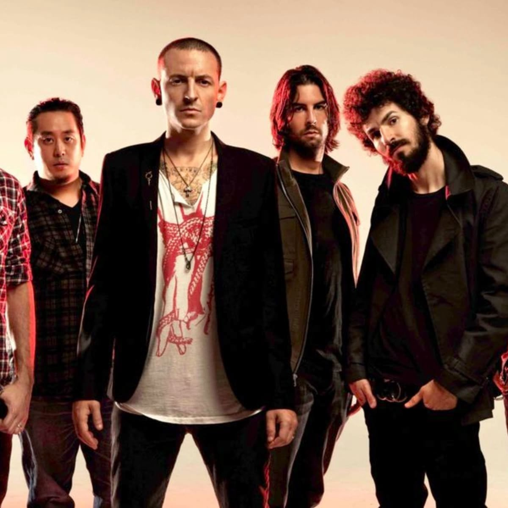

Linkin Park
Years Active: 1996–2017, 2023–present
Genre/s: Alternative rock, nu metal, rap rock, alternative metal, electronic rock, pop rock
Label/s: Warner, Machine Shop
Members: Mike Shinoda, Brad Delson, Joe Hahn, Dave Farrell, Emily Armstrong, Colin Brittain
Linkin Park is an American rock band formed in Agoura Hills, California, in 1996. The band's current lineup consists of vocalist/rhythm guitarist/keyboardist Mike Shinoda, lead guitarist Brad Delson, DJ/turntablist Joe Hahn, bassist Dave Farrell, vocalist Emily Armstrong, and drummer Colin Brittain. The lineup for the band's first seven studio albums included lead vocalist Chester Bennington and drummer Rob Bourdon; after Bennington's suicide in July 2017, the band endured a seven-year hiatus, during which Bourdon chose to depart from the band. In September 2024, Linkin Park's reformation was announced along with the addition of Armstrong and Brittain.
Categorized mainly as alternative rock and nu metal, Linkin Park's earlier music spanned a fusion of heavy metal and hip hop, with their later music featuring more electronica and pop elements. Linkin Park rose to international fame with their debut studio album, Hybrid Theory (2000), which became certified Diamond by the Recording Industry Association of America (RIAA). Released during the peak of the nu metal scene, the album's singles' heavy airplay on MTV led to the singles "One Step Closer", "Crawling", and "In the End" all charting highly on the US Mainstream Rock chart. The lattermost also crossed over to the number two spot on the nation's Billboard Hot 100. Their second album, Meteora (2003), continued the band's success. The band's third album, Minutes to Midnight (2007), marked a change in sound. By the end of the decade, Linkin Park was among the most successful and popular rock acts.
The band continued to explore a wider variation of musical types on their fourth album, A Thousand Suns (2010), layering their music with more electronic sounds. The band's fifth album, Living Things (2012), combined musical elements from all of their previous records. Their sixth album, The Hunting Party (2014), returned to a heavier rock sound, while their seventh album, One More Light (2017), was a substantially more pop-oriented record. The band's eighth album, From Zero (2024), returned to more of their original sound while also incorporating musical elements from all of their previous records.,p>Linkin Park is one of the best-selling music acts of all time, having sold over 100 million records worldwide. They have won two Grammy Awards, seven American Music Awards, four Billboard Music Awards, four MTV Video Music Awards, 10 MTV Europe Music Awards, and three World Music Awards. In 2003, MTV2 named Linkin Park the sixth-greatest band of the music video era and the third-best of the new millennium. Billboard ranked Linkin Park No. 19 on the Best Artists of the Decade list. In 2012, the band was voted as the greatest artist of the 2000s in a Bracket Madness poll on VH1. In 2014, the band was declared "the Biggest Rock Band in the World Right Now" by Kerrang!.